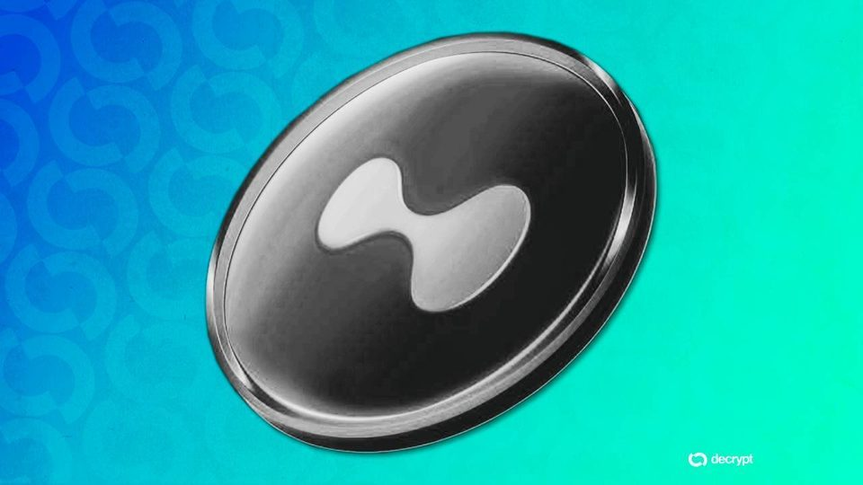
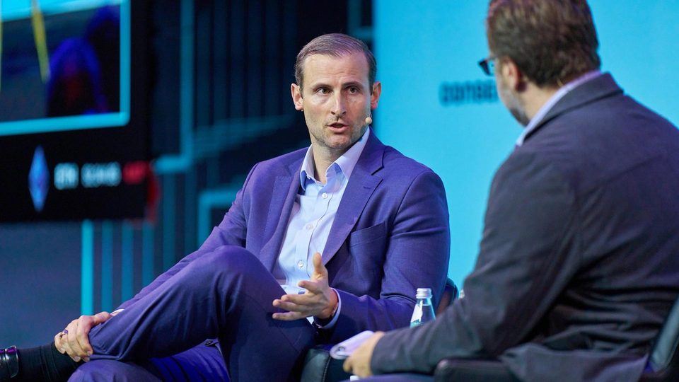
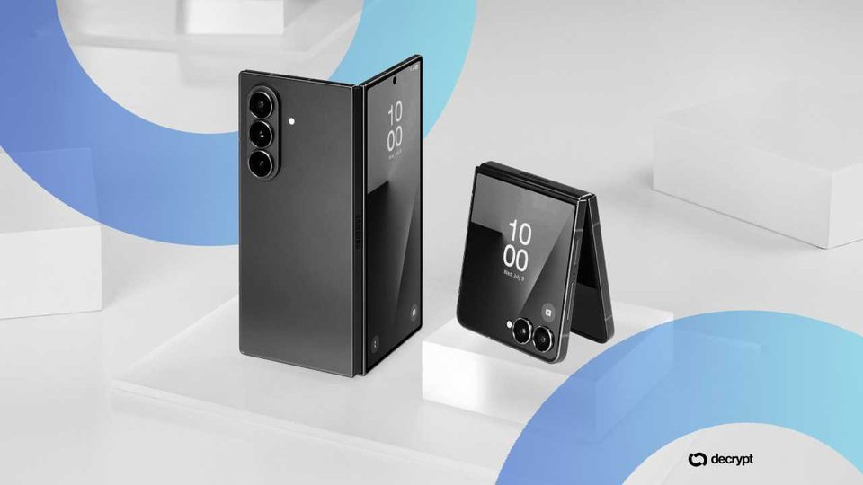
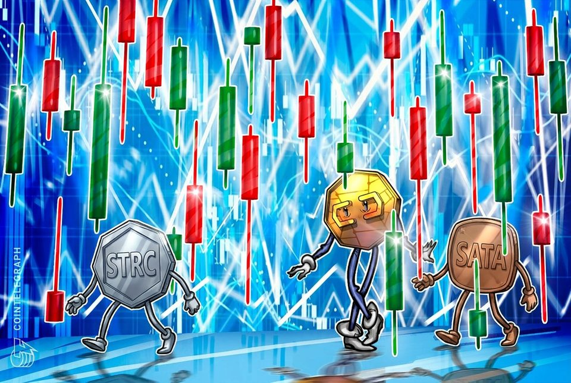
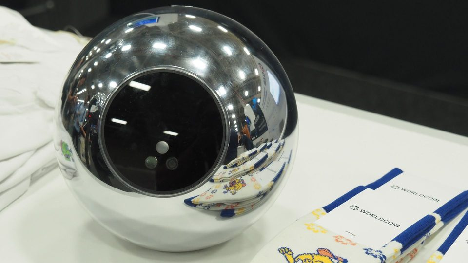
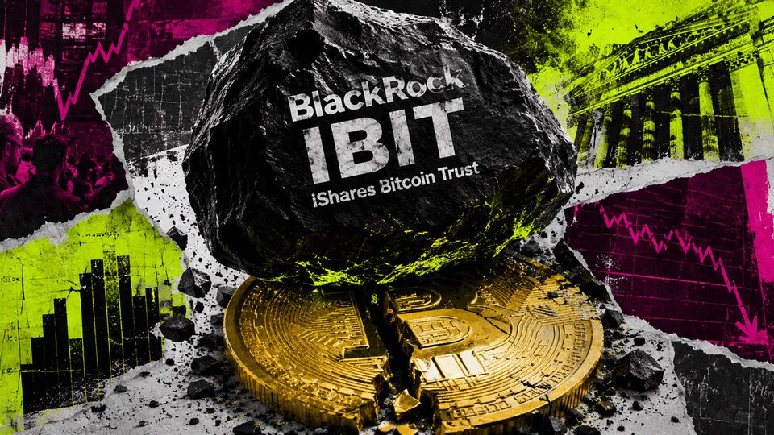
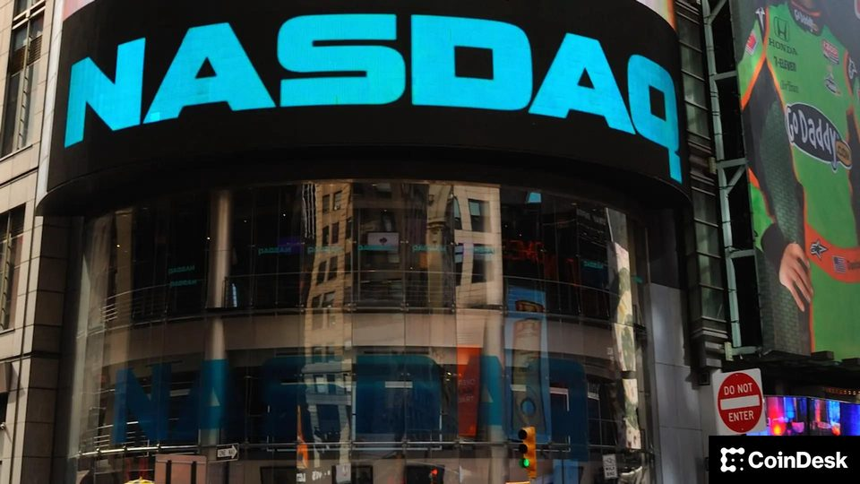

July 24, 2026
Daily headline set with source diversity, cleaned links, and local static rendering.

Stocks Just Topped Crypto on Hyperliquid. ARK Says That Changes Everything
For the first time, real-world assets—stocks, commodities, and market indices—outpaced crypto on the world's biggest decentralized derivatives exchange.
EU authorities include HTX exchange in Russian sanctions
The exchange, already sanctioned by the UK, is now on a list of 18 entities “providing crypto-assets services or payment services“ in defiance of the EU’s measures against Russia.
Strategy now publishes the Bitcoin return threshold below which it may have to restructure
Strategy has published a financial metric showing that Bitcoin could decline at a constant annual rate of 11.34% across the weighted duration of the company’s credit structure before its modeled coverage falls below...

Senate Dems should accept the victory they won on Trump's crypto limits: White House
Senate Dems should accept the victory they won on Trump's crypto limits: White House

Samsung Wallet Will Add Stablecoin Support, Including USDC
Samsung showed a wallet mockup holding Circle's USDC at Galaxy Unpacked. But details are scarce.

Strive's SATA recovers most of June decline, trades within 3% of par
Jan3 CEO Samson Mow says the recovery could signal renewed confidence in preferred-share products used by Bitcoin treasury companies.
FBI used Google cookies, 500 food orders and a Monero seed phrase to identify Steam malware funder
A 15-page federal criminal complaint details how investigators combined a Bitcoin trail with Google cookies, phone records, and more than 500 Uber Eats deliveries to identify Zyaire Dontaevious Zamarion Wilkins as the...

Sam Altman-backed World Network secures $52.5 million in fresh funding to fight online AI deepfakes
Sam Altman-backed World Network secures $52.5 million in fresh funding to fight online AI deepfakes

Claude Opus 5 Outscores Fable 5 on Most Benchmarks—At Half the Price
Anthropic's new everyday model undercuts its own frontier product on cost and beats it almost everywhere that counts.
House passes bill on lawmakers using insider information for stock trading
According to Senator Elizabeth Warren, the House bill “won’t solve the problem“ of insider trading in Congress as lawmakers will still be allowed to own and sell stocks.

BlackRock's IBIT accounted for 90% of a $225 million Bitcoin ETF reversal after a seven-day buying streak
US spot Bitcoin ETFs recorded $225 million in net outflows on July 23, ending a seven-session inflow streak as net redemptions from BlackRock’s iShares Bitcoin Trust dominated the reversal. IBIT posted a $202 million...

Institutional crypto trading platform LMAX is exploring sale, IPO
Institutional crypto trading platform LMAX is exploring sale, IPO